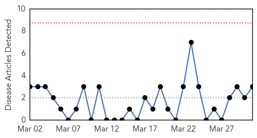
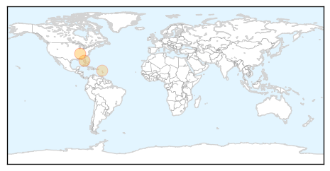
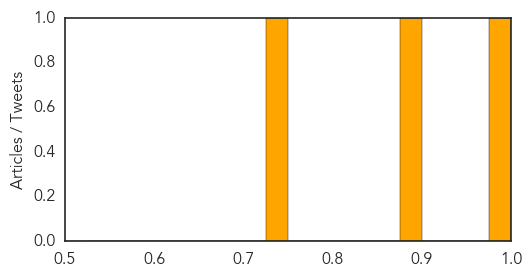
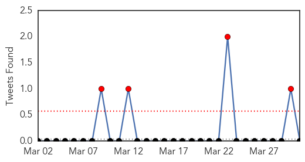
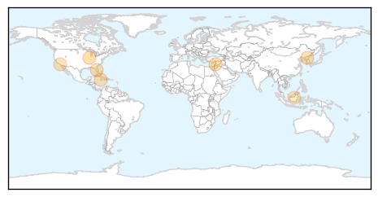
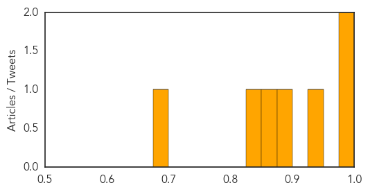

Chikungunya
30-Day Web Trend
0 alerts, 0 warnings

30-Day Twitter Trend
0 alerts, 0 warnings

Article Locations
Article Confidences
Top Articles:
Top Tweets:
-
No tweets found for Mar 31, 2015
Measles
30-Day Web Trend
0 alerts, 0 warnings

30-Day Twitter Trend
4 alerts, 0 warnings

Article Locations
Article Confidences
Top Articles:
- 0.990
- Measles still a threat as spring break nears
- 0.982
- As medical system struggles, risk of epidemic outbreak grows
- 0.925
- No Reports of North Korean Measles Outbreak
- 0.899
- Florida confirms measles case
- 0.867
- Chicken pox scare at University Hospital
- 0.841
- Aliso Niguel High School
- 0.680
- Brunei recognised, lauded for measles eradication: WHO
Top Tweets:
-
No tweets found for Mar 31, 2015